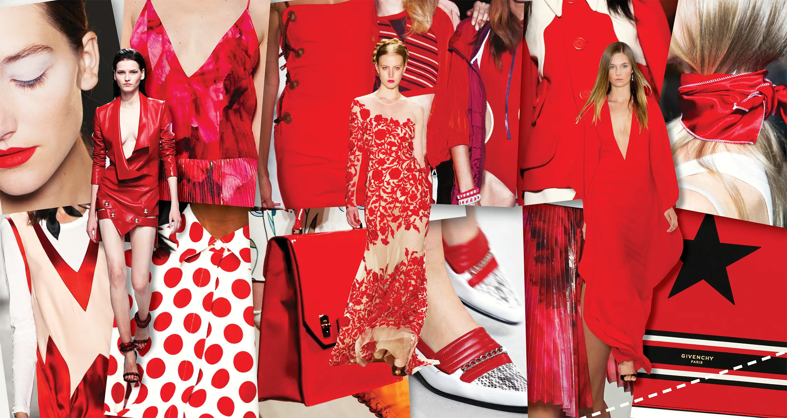

Moodboard
Design Challenge · Become a Crea(i)tive Director

I like Wikipedia's definition and description of a mood board's function:
A mood board is a type of visual presentation or 'collage' consisting of images, text, and samples of objects in a composition...
Graphic designers, interior designers, industrial designers, photographers, user interface designers and other creative artists use mood boards to visually illustrate the style they wish to pursue.
01Moodboard: Getting Started
In your case, you are creating a mood board for the brand you chose and the product you're launching. What is the "vibe" you want to convey with your campaign? What colors? What kind of typography? What does it "say"? What is the "vibe"? Mood boarding is open-ended, often associative. If you feel stuck, just start dragging images in from your product research.
Required reading: The Art of the Fashion Mood Board
I think a strong mood board is again like watching an exhilarating film. I'm very much influenced by directors like Alfonso Cuarón, Paul Thomas Anderson and David Fincher. Their ability to capture the vibrancy of a moment through mise-en-scène. For me, creating a photo collage or mood board is very similar. You want to create the experience of almost being on LSD, where small things can resonate with the same weight as the obvious. (Johnny Vandal, from above article)
02General guidelines
- Important: you should have a minimum of 20 images!
- Create a 1920x1080 landscape size document. I prefer photoshop but you can use Canva, Illustrator, inDesign, Photoshop. You can probably use something else, but do not use Microsoft word!
- Spend a few minutes looking at sample mood boards if you're stuck.
- Think about themes: color? tone? do you include words? people?
- Start by dragging in lots of images that come to mind. As you progress, zero in on a "vibe".